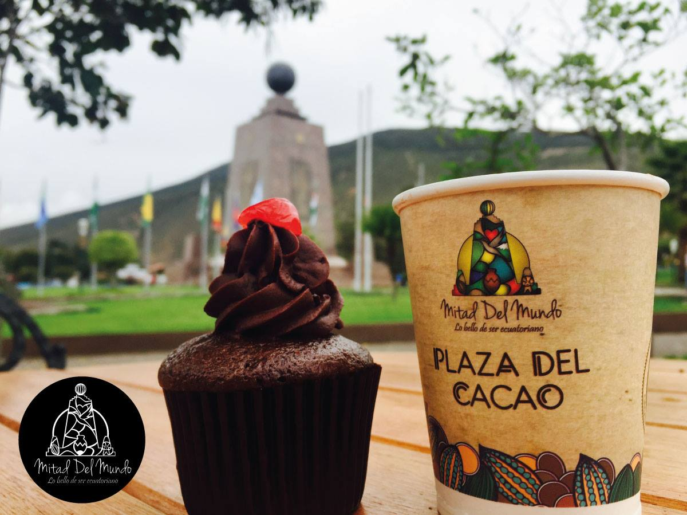
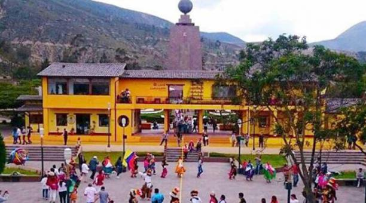

La pricipal atraccion dentro de este sitio es el "Monumento a la mitad del mundo, que señanala por exactamente donde pasa la linea 0° en nuestro planeta, aprate del monumentos, hay varias actividades que compruban que estamos en la mitad del mundo, como para el "huevo" en un clavo,etc.
Otro de los atractivos es la plaza del cacao, esta tienne como fin mostrar en si, como del cacao, sale el chocolate, el proceso, el crecimiento de la planta, tambien ofrece una variedad de postres para los visitantes.
Tambien hay varios pabellones, en cuales se encuentran exposiciones de obras artisticas, el planetario, un museo de insectos disecados y de la mision geodesica francesa que realizo la expedición, tambien hay exposiciones sobre la vida de los indigenas en la antiguedad, sus casas, sus costumbres y una exposicion de las famosas cabezas reducidas; entre estas cosas hay muchas que se pueden visitar.
